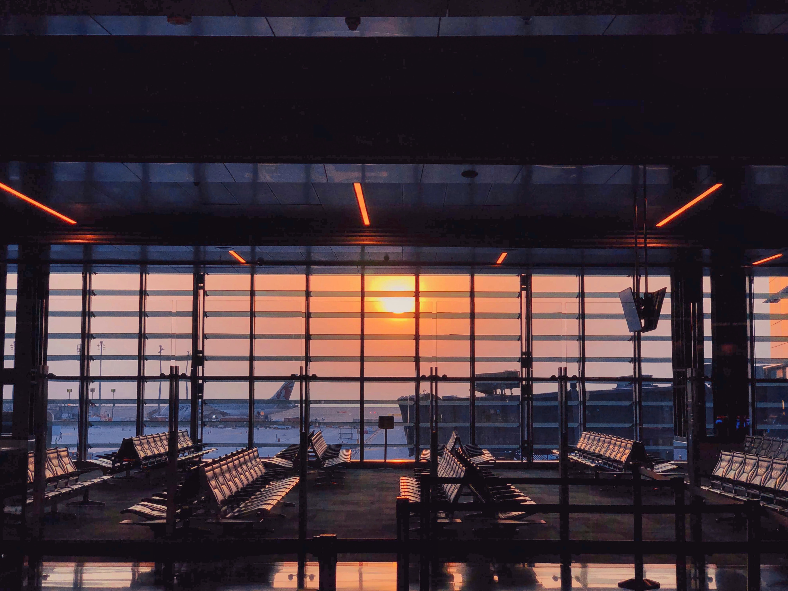

Every year, Americans spend thousands of dollars on vacations and travel. These vacations are often domestic or to destinations in Western Europe. As a result, a vast portion of the planet remains unrepresented by American tourism. The goal of this site is to help you find a new destination to explore, compare it with similarly priced local destinations, and then identify the great reasons behind why you should take on this new adventure.
By making these trips to some incredible destinations, you will be able to create unforgettable memories without spending an exorbitant amount of money. You will also be able to make connections spanning the globe, bringing the world a bit closer together. This will help improve cultural awareness and you might also make a new friend (or two)!
